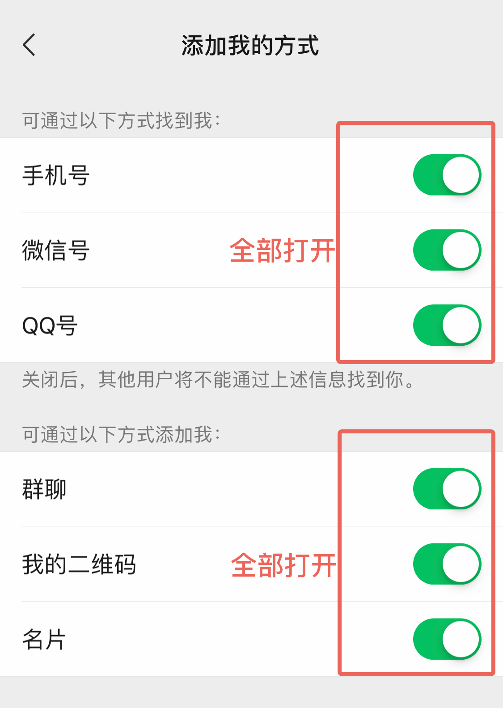
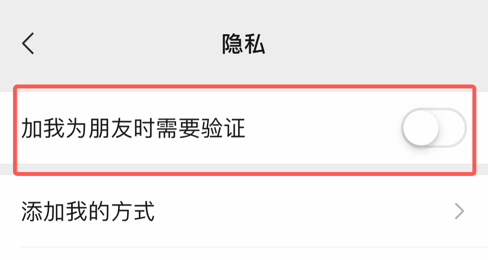
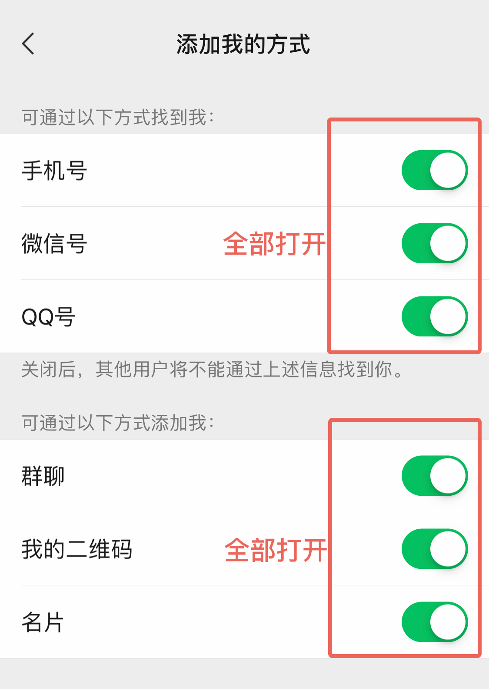
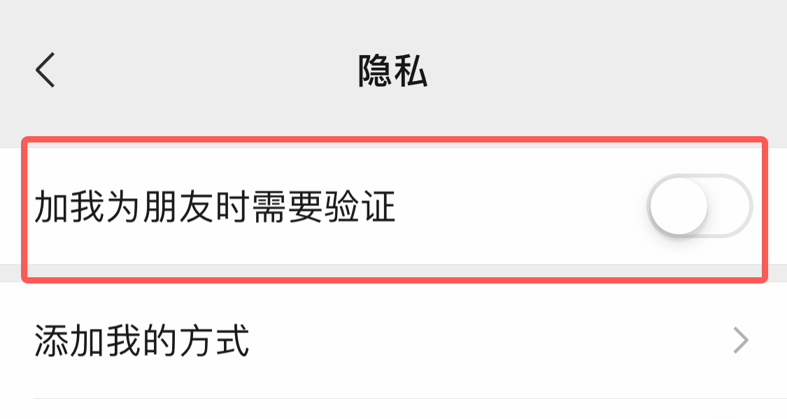

开启前的准备工作
开启被加前需要做什么准备工作？
1、微信需要绑定手机号，才能使用坐等被加；
2、注册微小鹿的手机号，务必和微信绑定的手机号一致；
微信需要打开以下设置
【微信】-【我】-【设置】-【隐私】-【添加我的方式】，手机号、二维码、微信号，建议都打开；

关闭微信好友验证：【微信】-【设置】-【隐私】，将【加我为朋友时需要验证】设置为关闭！

请务必按以上进行操作，否则会影响被加效果！
1、微信需要绑定手机号，才能使用坐等被加；
2、注册微小鹿的手机号，务必和微信绑定的手机号一致；
【微信】-【我】-【设置】-【隐私】-【添加我的方式】，手机号、二维码、微信号，建议都打开；

关闭微信好友验证：【微信】-【设置】-【隐私】，将【加我为朋友时需要验证】设置为关闭！

请务必按以上进行操作，否则会影响被加效果！